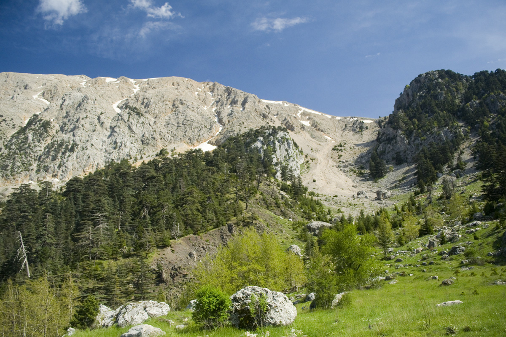
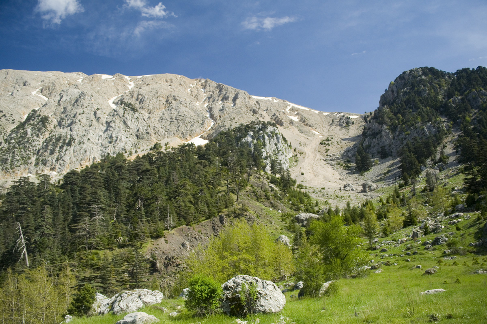
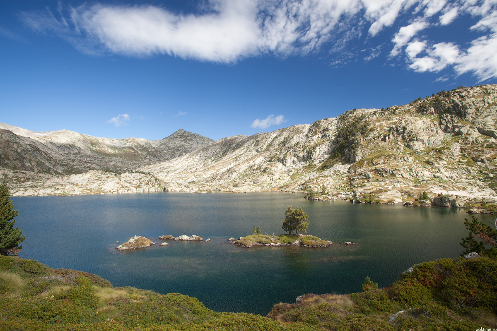
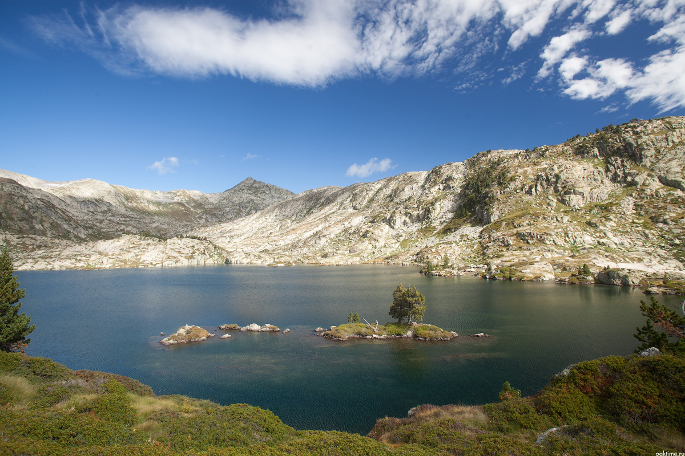
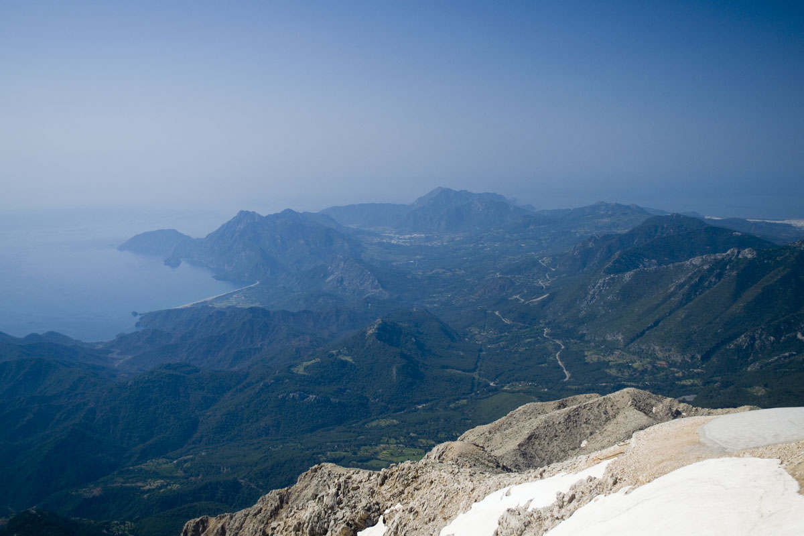
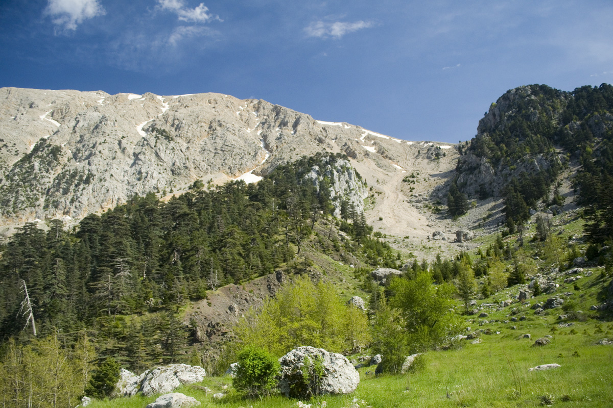
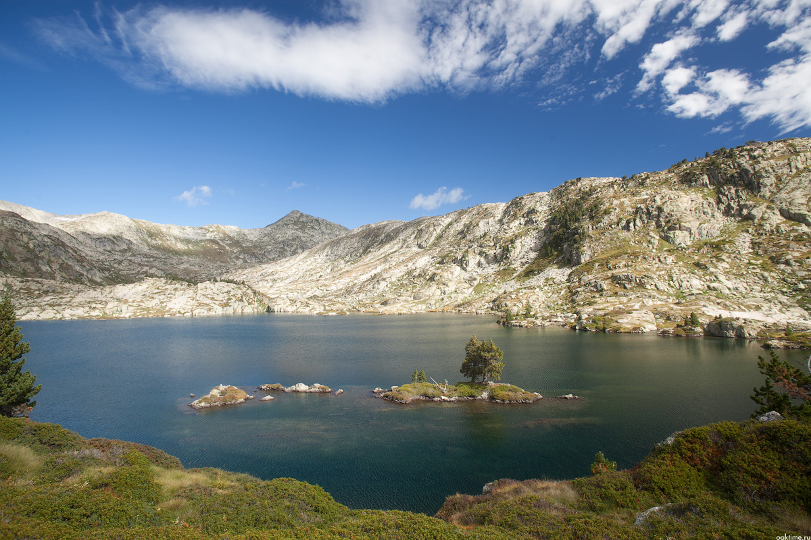

Ликийская тропа
План маршрута
1 день
Анталия — Гойнюк
Группа собирается в аэропорту в Анталии, перепаковываемся и распределяем продукты. Отсюда мы переезжаем в
поселок Гойнюк — начальный пункт нашего путешествия. Первая остановка на нашем пути каньон Гойнюк. В нижней части
каньона расположился парк, который можно посетить. От местных прозрачных озер с изумрудной водой и скалистых гротов
захватывает дух. В специальном снаряжении и жилете туристам предлагается проплыть к главной достопримечательности
этого места — висячему камню. В природных ваннах температура воды до +20 градусов. Рай, в котором мы и сделаем нашу
первую ночевку.

 

2 день
Каньон Гармонии
С первыми лучами утреннего солнца мы начинаем наш путь вокруг каньона Гармонии с небольшим набором высоты.
Живописные пейзажи и сочные краски турецких гор будут нас сопровождать весь день. Частенько будут попадаться платаны,
некоторым из них не одна сотня лет. Также здесь мы можем познакомиться с местными доброжелательными пастухами: народ в
Турции очень приветливый и общительный. Заночуем мы в верховьях каньона.
 

3 день
Гедельме
Сегодняшний день мы начнем с бодрящего купания в горной речке и вновь — вперед и вверх. Нас ждет прекрасная крепость
Гедельме. По пути мы увидим горы, вершины которых укутаны шапками снегов. Прямо не верится, что в такую жару где-то еще
сохранился снег. Возле крепости Гедельме множество достопримечательностей — это и лагерь кочевников, и дерево, посаженное
задолго до Рождества Христова, и карстовые пещеры, и остатки генуэзской крепости. Мы осмотрим все эти достопримечательности
и отправимся в сторону Тахтали. У истоков реки и заночуем, разобрав на дрова старый забор :)


4 день
Тахтали Даг (Олимп) (2365 м.)
Наш путь будет лежать по высокогорной долине с кедрами и известняковыми и карстовыми скалами. Но чем ближе к 2 тысячам
метров, тем меньше кедров, мы в голой каменной пустыне. Здесь по полгода лежит снег. Делаем рывок и вот мы на вершине Тахтали,
где построена станция канатной дороги, идущей из курортного поселка Кемер. С вершины покоренной нами горы открывается панорама
на все побережье. Полюбовавшись восхитительными видами и нафотографировавшись вдоволь, начинаем спуск с вершины. Заночуем на
одном из древних огородов, площадка идеально ровна и рядом мощный родник, что еще нужно покорителям Олимпа!?
5 день
Бейчик - Улупинар
Продолжим спуск через гранатовые сады к морю. Вообще гранатов в Турции полным-полно, успевай только собирать и есть, можно
даже оправдать перелет, хотя бы морально, пусть не финансово. С утра выйдем к деревне Бейчик, возле которой сделаем привал на
перекус. Заскучавшие по домашней еде могут отведать местной экзотической пищи :) Дальше проходим Улупинар, где множество ферм
по разведению форели. И за Улупинаром у реки и заночуем.


6 день
Химера (вечные огни) — пляжи Чирали
Затем нас ждет подъем на гору Химера (Янарташ), на вершине которой прямо из земли пробиваются “вечные огни”. По легенде,
Химера — это страшное чудовище, которое одолел древнегреческий герой Беллерофонт, а крылатый конь Пегас затоптал Химеру в землю.
С тех пор она там и лежит, изрыгая пламя. На самом же деле на вершине горы круглый год горит природный газ. Зрелище огней, идущих
из-под земли, особенно впечатляет ночью. В кемпинговом поселке Чирали мы остановимся, чтобы искупаться в теплом Средиземном море,
совершить несколько радиальных (без рюкзаков) выходов и ощутить покой и умиротворение. Деревушка очень живописна — горы и море
разделяют гранатовые, апельсиновые, лимонные сады, а весь пляж окружен итальянскими пиниями. К слову, местный пляж входит в 10ку
лучших пляжей мира! А по берегу свободно лазят черепахи каретта (с ластами). В этот день мы можем нежиться на пляже, восстанавливая
силы после сложного пути. Если кому то нужно в аэропорт, можно начинать уезжать уже сегодня. Если же мы будем успевать по маршруту,
то в этот день мы можем отправиться в Анталию смотреть старый город и развлекаться. Так что чем занятся найдем, не переживайте :).

План маршрута
1 день
Анталия — Гойнюк
Группа собирается в аэропорту в Анталии, перепаковываемся и распределяем продукты. Отсюда мы переезжаем в поселок Гойнюк — начальный пункт нашего путешествия. Первая остановка на нашем пути каньон Гойнюк. В нижней части каньона расположился парк, который можно посетить. От местных прозрачных озер с изумрудной водой и скалистых гротов захватывает дух. В специальном снаряжении и жилете туристам предлагается проплыть к главной достопримечательности этого места — висячему камню. В природных ваннах температура воды до +20 градусов. Рай, в котором мы и сделаем нашу первую ночевку.

2 день
Каньон Гармонии
С первыми лучами утреннего солнца мы начинаем наш путь вокруг каньона Гармонии с небольшим набором высоты. Живописные пейзажи и сочные краски турецких гор будут нас сопровождать весь день. Частенько будут попадаться платаны, некоторым из них не одна сотня лет. Также здесь мы можем познакомиться с местными доброжелательными пастухами: народ в Турции очень приветливый и общительный. Заночуем мы в верховьях каньона.

3 день
Гедельме
Сегодняшний день мы начнем с бодрящего купания в горной речке и вновь — вперед и вверх. Нас ждет прекрасная крепость Гедельме. По пути мы увидим горы, вершины которых укутаны шапками снегов. Прямо не верится, что в такую жару где-то еще сохранился снег. Возле крепости Гедельме множество достопримечательностей — это и лагерь кочевников, и дерево, посаженное задолго до Рождества Христова, и карстовые пещеры, и остатки генуэзской крепости. Мы осмотрим все эти достопримечательности и отправимся в сторону Тахтали. У истоков реки и заночуем, разобрав на дрова старый забор :)
4 день
Тахтали Даг (Олимп) (2365 м.)
Наш путь будет лежать по высокогорной долине с кедрами и известняковыми и карстовыми скалами. Но чем ближе к 2 тысячам метров, тем меньше кедров, мы в голой каменной пустыне. Здесь по полгода лежит снег. Делаем рывок и вот мы на вершине Тахтали, где построена станция канатной дороги, идущей из курортного поселка Кемер. С вершины покоренной нами горы открывается панорама на все побережье. Полюбовавшись восхитительными видами и нафотографировавшись вдоволь, начинаем спуск с вершины. Заночуем на одном из древних огородов, площадка идеально ровна и рядом мощный родник, что еще нужно покорителям Олимпа!?
5 день
Бейчик - Улупинар
Продолжим спуск через гранатовые сады к морю. Вообще гранатов в Турции полным-полно, успевай только собирать и есть, можно даже оправдать перелет, хотя бы морально, пусть не финансово. С утра выйдем к деревне Бейчик, возле которой сделаем привал на перекус. Заскучавшие по домашней еде могут отведать местной экзотической пищи :) Дальше проходим Улупинар, где множество ферм по разведению форели. И за Улупинаром у реки и заночуем.
6 день
Химера (вечные огни) — пляжи Чирали
Затем нас ждет подъем на гору Химера (Янарташ), на вершине которой прямо из земли пробиваются “вечные огни”. По легенде, Химера — это страшное чудовище, которое одолел древнегреческий герой Беллерофонт, а крылатый конь Пегас затоптал Химеру в землю. С тех пор она там и лежит, изрыгая пламя. На самом же деле на вершине горы круглый год горит природный газ. Зрелище огней, идущих из-под земли, особенно впечатляет ночью. В кемпинговом поселке Чирали мы остановимся, чтобы искупаться в теплом Средиземном море, совершить несколько радиальных (без рюкзаков) выходов и ощутить покой и умиротворение. Деревушка очень живописна — горы и море разделяют гранатовые, апельсиновые, лимонные сады, а весь пляж окружен итальянскими пиниями. К слову, местный пляж входит в 10ку лучших пляжей мира! А по берегу свободно лазят черепахи каретта (с ластами). В этот день мы можем нежиться на пляже, восстанавливая силы после сложного пути. Если кому то нужно в аэропорт, можно начинать уезжать уже сегодня. Если же мы будем успевать по маршруту, то в этот день мы можем отправиться в Анталию смотреть старый город и развлекаться. Так что чем занятся найдем, не переживайте :).